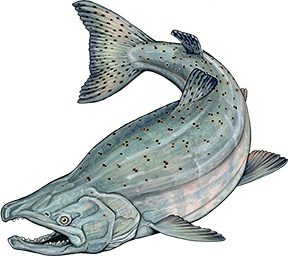
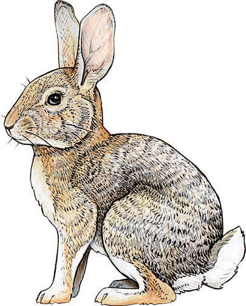

The SSBMI Language Department has created a Nisenan version of the game Go Fish! called "Welk’óy!", in which players compete to collect the most pairs of matching animal cards while speaking Nisenan. Here, you can learn and practice the Nisenan language that you need to be able to play "Welk’óy!". We encourage you to use as much Nisenan as you feel comfortable with, and remember to have fun too!
You can use the links below to jump to a specific part of this webpage:
If you would like to download a copy of the instruction cards for "Welk’óy!" which you can print at home, please click here.
Animal names
The "Welk’óy!" cards feature 32 local animals. You can listen to audio recordings of the Nisenan names for these animals below:
English
Nisenan
Turtle
Awán
Jackrabbit
Booyée
Striped Skunk
Buu
Scrub-Jay
C’ayít
California Quail
Hanpáy
Turkey Vulture
Hɨɨs
Great Horned Owl
Hɨmhɨ́m
Bear, Grizzly Bear
Kapá
Gray Squirrel
Kɨɨhɨ́
Raven
Kook
Butterfly
Koowáwa
Rattlesnake
Koymóo
Dragonfly
Kuuyúl
Deer
K’ut’
Hummingbird
Lisnó
Canada Goose
Loo

Salmon
May
Coyote
Olé

Cottontail
Paláal
Acorn Woodpecker
Panák
Lizard
Pic’ák’
Mallard
Sinná
Dog
Sukkú
Western Bluebird
Suutáat
Red-Tailed Hawk
Suuyú
Burrowing Owl
Tokk’óok’
Cat
Tonc’í
Chicken
Totoyká
Wild Turkey
Waahuló
Peregrine Falcon
Weekwék
Robin
Wistakták
Flicker
Woololók
Esak’ábe mi? (Do you know?) When selecting animals to include in "Welk’óy!", we chose quite a few animals that you can find on the rancheria grounds! Keep your eye out for animals like Panák (Acorn Woodpecker), Woololók (Flicker), K’ut’ (Deer), and Waahuló (Wild Turkey) as well as other local animals like Booyée (Jackrabbit), Suutáat (Western Bluebird), Kuuyúl (Dragonfly), and Pic’ák’ (Lizard)!
Asking "Do you have _______?" and responding
While playing "Welk’óy!", players take turns asking a second player whether they have a specific card. If the second player has that card, then they must give it to the first player. If they do not have that card, then they tell the first player to "go fish" by drawing from the draw pile.
You can ask someone "Do you have _____?" in Nisenan using the following phrase. All you need to do is fill in the blank with the name of some animal, and shift any accent mark from the name of that animal to the syllable "pe":
English
Nisenan
Do you have _____?
_____-pébe mi?
Do you have Kook?
Kookpébe mi?
Do you have Sinná?
Sinnapébe mi?
Do you have Waahuló?
Waahulopébe mi?
Makbeepé! (Let's try it out!) Knowing this, how would you ask someone if they have the following animal cards? (highlight to see the answer):
English
Nisenan
Do you have Buu?
Buupébe mi?
Do you have Hanpáy?
Hanpaypébe mi?
Do you have Koowáwa?
Koowawapébe mi?
If the second player has the card that the first player asked for, then they say "Haan" (Yes) and give that card to the first player. They can also say "I have _____" by adding "-pém ni" to the end of the name of that card (and shifting any accent mark to the syllable "pem"), like so:
English
Nisenan
Yes
Haan
I have _____.
_____-pém ni.
I have Kook.
Kookpém ni.
I have Sinná.
Sinnapém ni.
I have Waahuló.
Waahulopém ni.
Makbeepé! (Let's try it out!) Knowing this, how would you tell someone that you have the following animal cards? (highlight to see the answer):
English
Nisenan
I have Buu.
Buupém ni.
I have C’ayít.
C’ayitpém ni.
If the second player does NOT have the card that the first player asked for, then they say "Wiin" (No). They can also say "I do not have _____" by adding "-míim ni" to the end of the name of that card (and shifting any accent mark to the syllable "miim"), like so:
English
Nisenan
No
Wiin
I do not have _____.
_____-míim ni.
I do not have Kook.
Kookmíim ni.
I do not have Sinná.
Sinnamíim ni.
I do not have Waahuló.
Waahulomíim ni.
Makbeepé! (Let's try it out!) Knowing this, how would you tell someone that you do not have the following cards? (highlight to see the answer):
English
Nisenan
I do not have Loo.
Loomíim ni.
I do not have Hanpáy.
Hanpaymíim ni.
Instead of saying "go fish", the second player then tells the first player "Welk’óy!". This is a command to one person meaning "Go seek!" in Nisenan, instructing the first player to pick up a new card from the draw pile and add it to their hand.
English
Nisenan
Go seek!
(said to 1 person)
Welk’óy!
More gameplay language
When you play "Welk’óy!", you may want to use other "gameplay" language to talk to your opponents in Nisenan. Here, you can learn how to tell them to take their turn, declare that you won, and more. We encourage you to use as much Nisenan language as you feel comfortable with!
You can begin a game in Nisenan using either of the following phrases. Note that the suffix "-pe" means "Let's _____!" in both phrases:
English
Nisenan
Let's play!
(said to 2+ people)
K’aatopé!
Let's begin!
(said to 2+ people)
Hoyyapé!
You can declare whose turn it is using either of the following phrases. Note that there is no direction translation for a "turn" in a game in Nisenan. Rather, we use the verb "k’aa-" (to do something) to talk about whose turn it is when we play Nisenan games:
English
Nisenan
I'll do it!
("It is my turn.")
K’aas!
You should do it!
("It is your turn.")
K’áabene!
You can tell another player to "take" a card or "give me" a card using the following phrases. Note that both phrases are directed to one person:
English
Nisenan
Take it!
(said to 1 person)
Meep mɨyé!
Give it to me!
(said to 1 person)
Mey nik mɨyé!
At the end of the game, you can declare that you won using the following phrase:
English
Nisenan
I won!
Halé’as ni!
Finally, you can ask to play again using the following phrase:
English
Nisenan
Let's play again!
K’aatopé kan!
Esak’ahá daak’ábe mi c’aykɨ́? (Do you want to know more?)
If you would like to learn more about the Miwok version of this game, called "Wélse’!", please click here.
If you would like to learn more about how we created "Welk’óy!", including how we chose which animals to include, how we designed and obtained artwork for the cards, and who the language comes from, please click here or reach out to us at Language@ssband.org.
Would you like a copy?
If you would like a copy of the Nisenan "Welk’óy!" and/or Miwok "Wélse’!" cards to play at home, please contact us at language@ssband.org. Please understand that supplies are limited and we cannot guarantee copies for non-SSBMI Tribal Members.
If you would like to download a copy of the Nisenan "Welk’óy!" cards which you can print at home, please click here. (instructions)